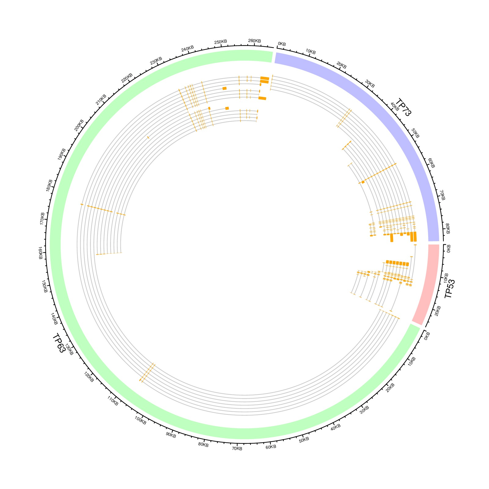

library(circlize)
load(paste0(system.file(package = "circlize"), "/extdata/tp_family.RData"))
df = data.frame(gene = names(tp_family),
start = sapply(tp_family, function(x) min(unlist(x))),
end = sapply(tp_family, function(x) max(unlist(x))))
circos.genomicInitialize(df)
circos.genomicTrackPlotRegion(ylim = c(0, 1),
bg.col = c("#FF000040", "#00FF0040", "#0000FF40"),
bg.border = NA, track.height = 0.05)
n = max(sapply(tp_family, length))
circos.genomicTrackPlotRegion(ylim = c(0.5, n + 0.5),
panel.fun = function(region, value, ...) {
gn = get.cell.meta.data("sector.index")
tr = tp_family[[gn]] # all transcripts for this gene
for(i in seq_along(tr)) {
# for each transcript
current_tr_start = min(tr[[i]]$start)
current_tr_end = max(tr[[i]]$end)
circos.lines(c(current_tr_start, current_tr_end),
c(n - i, n - i), col = "#CCCCCC")
circos.genomicRect(tr[[i]], ytop = n - i + 0.4,
ybottom = n - i - 0.4, col = "orange", border = NA)
}
}, bg.border = NA, track.height = 0.3)
circos.clear()